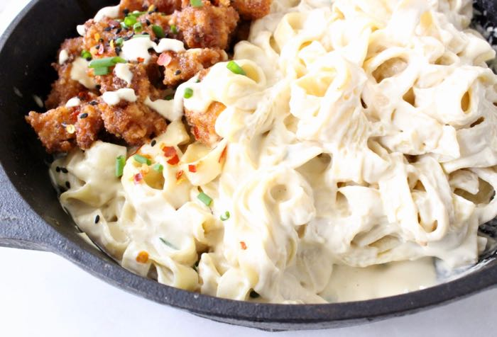

Easy Vegan Alfredo

Description
Are you a lazy vegan? Same. This recipe is quick, easy and packed full of flavor. It can be made in 30 minutes and uses ingredients that you probably already have in your kitchen. So let's get into it!
| 10 minutes |
20 minutes |
30 minutes |
4 |
3-4 |
Ingredients
Pasta
- 8-10 ounces of your favorite pasta noodles (I'll be using Cavatappi noodles)
- 3 tbsp olive oil
- 2 tbsp minced garlic
- 4 tbsp all purpose flour
- 1 3/4- 2 cups unsweeetened plain almond milk (or your choice of milk alternative
- 1/4 cup of nutritional yeast
- Seasoning to taste: italian herb seasoning, garlic powder, onion powder, salt and pepper
Optional Ingredients
- fresh basil
- broccoli
- plant-based chicken
- red pepper flakes
- vegan parmesan
Steps to make this meal
- Add pasta to a large pot of boiling, well-salted water and cook according to package instructions.
- While waiting to for the water to boil and pasta to cook, heat a large skillet over medium heat. Once hot, add olive oil and garlic, stirring quickly to ensure it doesn’t burn
- Reduce heat slightly, gradually add all-purpose flour and whisk to combine. Cook for about a minute and then add almond milk slowly (about 1/4 cup at a time) as you're whisking to prevent clumps. Cook for 2 minutes
- Next, add your seasonings, vegan parmesan cheese, nutritional yeast, and whisk throughly until creamy and smooth, scraping down sides as needed. Taste and adjust seasonings as needed – don't be shy.
- If sauce is too thick, add a little more milk. If too thin, whisk in 1-2 tsp more of all-purpose flour. Whisk to combine and repeat as needed. Once the desired consistency is reached, add your broccoli and allow the sauce to simmer.
- Once sauce is ready, add pasta, plant-based chicken, and toss. Cook for 1-2 minutes to warm through then serve with fresh basil, additional vegan parmesan cheese, and red pepper flakes.
- Leftovers keep covered in the refrigerator for up to a few days, though best when fresh.